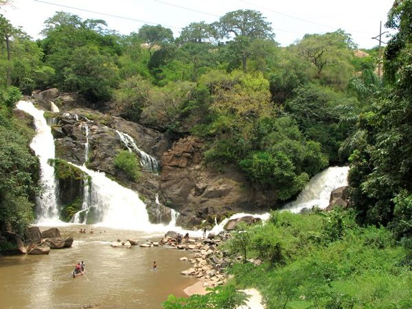

Natureza · Cachoeira, Cuanza Sul
Quedas do Binga
Cascatas no rio Keve, com zona de piquenique.
Quedas de água no rio Keve, uma das paragens mais procuradas do Cuanza Sul. Ficam a cerca de três horas de Luanda, depois do Porto Amboim, a caminho da Gabela. O Parque das Cachoeiras tem muitas mesas para piquenique.
Informação prática
- Horário
- Por confirmar
- Morada
- Cachoeira, Cuanza Sul
- Preço
- Entrada gratuita
Verificado a 12 de outubro de 2026. Fontes: Ver Angola (dezembro de 2019), OpenStreetMap. Confirme sempre antes de ir.
Mais lugares em Cuanza Sul
- Baía de Quicombo · Quicombo, Cuanza Sul
- Fortim do Quicombo · Quicombo, Cuanza Sul
- Hotel Kalunda · Sumbe, Cuanza Sul
- Bar Chule-me · Sumbe, Cuanza Sul
Quedas do Binga — Nature, Cachoeira, Cuanza Sul
Waterfalls on the Keve River, with picnic tables.
Waterfalls on the Keve River, one of the most visited stops in Cuanza Sul. They are about three hours from Luanda, past Porto Amboim on the way to Gabela. The Parque das Cachoeiras has plenty of picnic tables.
Prices in Kwanza, opening hours and directions are in the Tuende app (Portuguese and English).